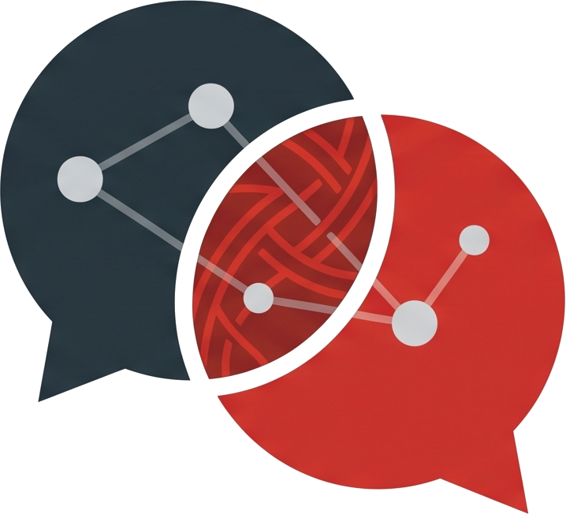

3回シリーズ 無料Webセミナー 第3回 ／ 2026年9月27日（日）21:00〜21:45
ChatGPT、去年の使い方のままになっていませんか。
「調べる・書く」は、
もう卒業していい。
今日は、AIに「聞く」のをやめます。
「やらせる」に切り替えます。
清水 幸久（Yukisa）AI・ITよろず相談所
Google Meet 参加無料 各回45分

AI・ITよろず相談所Recap
第1回・第2回の振り返り
01
投げ分ける
答えがだいたい決まっているなら速い方。一緒に探してほしいなら、入力欄の横の「思考」で考えさせる方。
02
書き方と、置き場所
誰が読むか・どうなれば完成か・確かめてほしい所を書く。自分のことはカスタム指示、仕事の型はプロジェクトに置いておく。
03
今日：やらせる
ここまでは「聞く」話でした。今日は「やらせる」話です。大きく変わります。
今日が初めての方も大丈夫です。今日だけで完結する内容にしています。
AI・ITよろず相談所 ／ 清水幸久
2 / 22
AI・ITよろず相談所
第3回 ／ 2026.09.27
Agenda
今日の45分 — 最終回
| 時間（目安） | 内容 |
|---|---|
| 0〜5分 | 「聞く」から「やらせる」へ |
| 5〜17分 | 【デモ①】定期実行を、1本だけ作る（無料アカウント） |
| 17〜31分 | 【デモ②】いくつもの手順を、まとめて渡す／「AIに任せる」4つの段階／Work と GPT-6／いつもの画面の中のChatGPT |
| 31〜34分 | 会社の情報、どこまで入れていいか |
| 34〜37分 | この先にある「自分の道具を作る」世界（8月の録画のご案内） |
| 37〜45分 | 3回のまとめ・質問タイム |
デモ①に12分、デモ②に14分取っています。作るのは1本だけ、無料アカウントでやります。できれば、いまChatGPTを開いておいてください。
AI・ITよろず相談所 ／ 清水幸久
3 / 22
AI・ITよろず相談所
第3回 ／ 2026.09.27
Premise
これ、私は何もしていません
今朝、私が起きる前に届いていたものです。
一度だけ設定して、
あとは決まった朝に勝手に届きます。
あとは決まった朝に勝手に届きます。
いちばん違うのは「やろうと思い出さなくていい」ことです。やる気とか、覚えているかどうかとか、そういうものから切り離されます。
AI・ITよろず相談所 ／ 清水幸久
4 / 22
AI・ITよろず相談所
第3回 ／ 2026.09.27
Shift
「聞く」と「やらせる」の違い
聞く（第1回・第2回）
自分が画面の前にいる必要がある
思い出したときにしかやらない
毎回、自分から始める
うまくいったら、その場で終わり
→
やらせる（今日）
自分がいなくても進んでいる
決めた曜日に、勝手に始まる
一度設定すれば、繰り返される
うまくいったら、資産になる
「AIを使う」から「AIを持っている」に変わる瞬間です。
AI・ITよろず相談所 ／ 清水幸久
5 / 22
AI・ITよろず相談所
第3回 ／ 2026.09.27
Goal
今日、持って帰るものは1つだけです
勝手に動く仕組みが1つ、
自分のアカウントに残っている。
自分のアカウントに残っている。
作るのは1本だけです。あれもこれも見せると「すごいな」で終わって、家に帰って何もやりません。その代わり、その1本は必ず動かして帰っていただきます。
AI・ITよろず相談所 ／ 清水幸久
6 / 22
AI・ITよろず相談所
第3回 ／ 2026.09.27
LIVE DEMO
定期実行を、1本だけ作る
「毎週この曜日に、これをやっておいて」を目の前で作って、実際に動くところまでやります。無料アカウントで作ります。
いきなり登録しません。まず手で1回やって、納得できるまで直します。ここを逆にすると、毎週ダメな結果が届き続けます。
AI・ITよろず相談所 ／ 清水幸久
7 / 22
AI・ITよろず相談所
第3回 ／ 2026.09.27
Method
定期実行の作り方 — 4手順
今日やったことを、手順にするとこれだけです。作った定期実行は、サイドバーの「スケジュール」にまとまります。
1
まず手で1回やらせる
納得できる結果が出るまで、指示文を直す。ここがいちばん大事です
2
その指示文を、そのまま登録する
新しく書き直さない。同じチャットで「これを毎週月曜の朝にやって」と頼むだけ
3
曜日と時間帯を決める
無料は「朝・昼・夜」の枠で選びます。自分が必ず画面を見る時間帯に。届いても見なければ、無いのと同じです
4
1回テストして、止め方も確認する
一時停止・削除は「スケジュール」の一覧から。作り方だけ覚えて止め方を知らないと、あとで困ります
AI・ITよろず相談所 ／ 清水幸久
8 / 22
AI・ITよろず相談所
第3回 ／ 2026.09.27
Fit
登録に向くもの、向かないもの
登録したものは、毎回同じ指示で動きます。材料が変わらなければ、毎回同じ答えが届きます。
向く — AIが材料を取りに行ける
業界のニュースを、毎週3件にまとめる
取引先・競合の新しい発表を拾う
「今週の振り返り」の問いかけを届けてもらう
→
向かない — 材料を毎回こちらが渡す
会議メモから議事録を作る
今週の予定表から、やり残しを出す
これは第2回のプロジェクトに型を置いて、手で回す
無料でも使えます（2026年8月〜）。動かしておけるのは3件まで。繰り返しは1日1回まで、時間は「朝・昼・夜」の枠。ぴったりの時刻や1時間ごとは有料（Plusは5件）です。
出典：OpenAIヘルプ「Scheduled tasks in ChatGPT」。2026年9月24日時点の情報です。
AI・ITよろず相談所 ／ 清水幸久
9 / 22
AI・ITよろず相談所
第3回 ／ 2026.09.27
LIVE DEMO
いくつもの手順を、まとめて渡す
調べる → まとめる → 資料にする。これを一度の依頼で、無料の普通のチャットに渡します。
3分ほどかかります。待っている間に、ご質問を拾わせてください。
第2回の「混ぜると直しにくい」とは違います。番号で順番を決めて、途中の結果も見せてもらうので、どこで外れたかが分かります。
第2回の「混ぜると直しにくい」とは違います。番号で順番を決めて、途中の結果も見せてもらうので、どこで外れたかが分かります。
AI・ITよろず相談所 ／ 清水幸久
10 / 22
AI・ITよろず相談所
第3回 ／ 2026.09.27
Template
まとめて渡すときの書き方 — 第2回の型に1つ足す
番号で順番を決めて、途中の結果も見せてもらう。これで「混ぜると直しにくい」になりません。
コピーして、空欄を埋めてください
次の〔 〕つを、順番にやってください。 ← 今日足すところ1. 〔 〕について調べる 2. 要点〔 〕つにまとめる 3. 〔 〕の形に整える
背景： ← ① 誰が読むか・何に使うか
・読み手は〔 〕です ・〔 〕に使います
以下の形で出してください： ← ② どうなれば完成か
・1と2の結果も省略せずに見せる ・3は全体で〔 〕字程度
確かめてほしい所： ← ③ 確かめてほしい所・あいまいな所の扱い
・数字には必ず出典を付ける ・出典が見つからないものは「※要確認」として最後に分ける
入力欄の横の「思考」をオンにして投げます。無料のままで使えます。
AI・ITよろず相談所 ／ 清水幸久
11 / 22
AI・ITよろず相談所
第3回 ／ 2026.09.27
Boundary
どこまで任せて、どこから自分でやるか
いちばんよく聞かれるところです。私の線引きをお話しします。
| やること | 判断 | なぜ |
|---|---|---|
| 材料を集める・並べる・形にする | 任せていい | 人がやっても品質が上がりません |
| たたき台をつくる | 任せていい | ゼロから書き始める苦痛がなくなります |
| 数字と固有名詞の確認 | 自分でやる | AIは平気で、もっともらしく間違えます |
| 最後の言い回し | 自分でやる | あなたの名前で出るものです |
7割が3分で出てくる。残り3割を10分でやる。合計13分。これがいまの現実的な形です。
AI・ITよろず相談所 ／ 清水幸久
12 / 22
AI・ITよろず相談所
第3回 ／ 2026.09.27
Agent
「AIに任せる」には4つの段階があります
第1回で「作業そのものを任せる話は第3回で」とお伝えしました。いわゆる「AIエージェント」は4段目です。
| 段階 | こちらがやること | 無料で |
|---|---|---|
| 1 聞く | 1つずつ頼んで、1つずつ受け取る（第1回・第2回） | ◎ 使える |
| 2 まとめて渡す | 順番と完成の形を書いて、1回で渡す（今日のデモ②） | ◎ 使える |
| 3 決まった時間に動かす | 一度登録すれば、毎週勝手に届く（今日のデモ①） | ◎ 3件まで・1日1回まで |
| 4 丸ごと任せる（Work） | 「何がほしいか」だけ言い、AIが出した計画を確かめて任せる。数時間かけて、表・資料・スライドまで仕上げる | × Plus以上 （最上位のGPT-6 Astraも） |
4段目がなくても、2段目と3段目だけで、毎週の仕事はかなり減ります。今日は無料で届く2・3段目を持って帰っていただきます。
出典：OpenAIヘルプ「ChatGPT agent」（エージェントは「Work」へ移行）、ChatGPTリリースノート（7/9 Work、9/3 GPT-6 Astra）。2026年9月24日時点の情報です。
AI・ITよろず相談所 ／ 清水幸久
13 / 22
AI・ITよろず相談所
第3回 ／ 2026.09.27
Work ／ GPT-6
4段目の「Work」と、GPT-6の3つのモデル
Workは「何がほしいか」を言うと、AIが計画を出し、確かめて任せると数時間かけて完成品まで仕上げる機能です（2026年7月〜）。
ふだんのチャットと、Workの違い
| ふだんのチャット | Work | |
|---|---|---|
| 頼み方 | 1つずつ頼む | ほしい結果を1回言う |
| かかる時間 | 数秒〜数分 | 数十分〜数時間 |
| 出てくるもの | 文章 | 表・資料・スライドなどのファイル |
| こちらの役目 | 毎回指示する | 計画を確かめ、途中の判断をする |
| 使えるプラン | ◎ 無料から | × Plus以上 |
GPT-6は3つ（9/3 Astra、9/22 Sol・Luna）
| モデル | 向いている仕事 | 使える所 |
|---|---|---|
| Astra | 最上位。資料づくり・調べもの・パソコン操作 | Plus以上 |
| Sol | 込み入った作業。間違いは前の世代の約半分で、Astraに近い確かさ | Work・Codex（Plus以上） |
| Luna | 要約など、量が多くて目的がはっきりした作業。速くて安い | Work・Codex（Plus以上） 無料・Goもデスクトップアプリで試せる |
ふだんのチャットはGPT-5.6のままです（無料はGPT-5.6 Luna）。同じ「Sol・Luna」でも、5.6と6は別のモデルです。
出典：OpenAI発表（GPT-6 Sol・Luna、9/22）、ChatGPTリリースノート、TechCrunch 9/22。2026年9月24日時点の情報です。提供範囲は日々変わります。
AI・ITよろず相談所 ／ 清水幸久
14 / 22
AI・ITよろず相談所
第3回 ／ 2026.09.27
Add-in
ChatGPTが、いつもの画面の中に来ています
ChatGPTの画面に貼り付けて、答えをコピーして戻す。この往復がなくなります。
| どこで | できること | いいところ | 無料で |
|---|---|---|---|
| Excel／ スプレッドシート | 表の横でChatGPTに頼む。管理表を作る、崩れたデータを整える、数式やエラーの原因を説明させる | 表を貼らなくていい。変わったセルが見える | ◎ 使える ホーム → アドイン →「ChatGPT」 |
| Word | 文書の横で、下書き・要約・直しを頼む（9/17〜） | 書式を崩さずに直せる | ◎ 使える |
| ブラウザー （Chrome・Edge） | 見ているページについて横で聞く。字幕のある動画をまとめる。ログインしたサイトの操作を任せる | URLや本文を貼らなくていい | △ デスクトップアプリが必要。範囲は未公表 |
2つだけ注意。Excelの中の会話はふだんの履歴と別で、カスタム指示やメモリーは効きません（前提はそのつど書く）。会社のパソコンに入れる前は、会社のルールを確認してください。ブラウザー拡張は「すべてのサイトのデータを読み取り・変更」の許可を求めます。
出典：OpenAIヘルプ「ChatGPT for Excel and Google Sheets」、ChatGPT Learn「Browser extension」、ChatGPTリリースノート（9/17 Word）。2026年9月26日時点の情報です。
AI・ITよろず相談所 ／ 清水幸久
15 / 22
AI・ITよろず相談所
第3回 ／ 2026.09.27
Company Data
会社の情報、どこまで入れていいか
第1回・第2回で「第3回でご説明します」とお約束した線引きです。
| 分け方 | 中身 |
|---|---|
| × 入れない | お客様の名前や連絡先、社外に出ていない数字や計画、パスワードや社内システムの情報 |
| ◎ 置き換えて入れる | 「A社」「取引先」「約2割」のように置き換える。業種と立場（建設資材メーカーの営業事務）は書いて大丈夫です |
| ★ 設定を確かめる | 個人のアカウントは 設定 → データコントロール →「すべての人のためにモデルを改善する」をオフ で、学習に使われません。一時チャットも最大30日は保管されます |
| ▲ 会社のルールが先 | 会社で契約したBusiness・Enterpriseは、最初から学習に使われません。個人のアカウントで会社の情報を扱ってよいかは、会社のルールで決まります |
迷ったら、「この画面を社外の人に見られて困るか」。困るなら入れない。
出典：OpenAIヘルプ「Data controls in ChatGPT」「Privacy Center in ChatGPT」。2026年9月24日時点の情報です。
AI・ITよろず相談所 ／ 清水幸久
16 / 22
AI・ITよろず相談所
第3回 ／ 2026.09.27
Next Door
この先に、もうひとつ扉があります
コードを書かずに、自分専用の道具をつくる。今日は扉を開けて、中を見ていただくだけです。
01
選ぶための道具
自分の判断基準を入れて、迷いがちな決めごとを毎回同じ軸で判断できるようにする
02
書類をつくる道具
決まった形式の書類を、項目を埋めるだけで完成させる
03
お客さんに渡すページ
外注すると5万〜20万円かかるような、簡単な入力ページ
すべて文章で指示するだけで作ったものです。私はコードを一行も書いていません。やり方の説明は今日はしません。作り方は、次のページの録画にあります。
AI・ITよろず相談所 ／ 清水幸久
17 / 22
AI・ITよろず相談所
第3回 ／ 2026.09.27
Recording
続きは、8月の録画でご覧いただけます
8月に3回シリーズで「コードを書かずに、自分の道具を作る」をやりました。いまお見せした道具の作り方は、こちらにあります。
各回45分ほどです。第1回から順にご覧ください。分からないところは、よろず相談所で一緒に画面を見ます。
AI・ITよろず相談所 ／ 清水幸久
18 / 22
AI・ITよろず相談所
第3回 ／ 2026.09.27
Summary
3回のまとめ
| 回 | やったこと | 持ち帰ったもの |
|---|---|---|
| 第1回 | ChatGPTの現在地を確かめた | 答えが決まっているなら速い方、探すなら考えさせる方 |
| 第2回 | 答えが揺らぐ原因を潰した | 指示文を工夫するより、前提を置いておく方が効く（自分のこと＝カスタム指示、仕事の型＝プロジェクト） |
| 第3回 | 聞くのをやめて、やらせた | 先に手で1回やる → 納得したら登録する |
この3つだけ持って帰っていただければ、3回分の元は取れています。
AI・ITよろず相談所 ／ 清水幸久
19 / 22
AI・ITよろず相談所
第3回 ／ 2026.09.27
Take Away
明日からの3ステップ ／ ご相談ください
今週やること
3ステップだけ
1 今夜 今日作ったものが「スケジュール」に入っているか確認する
2 今週中 カスタム指示に4行、まだなら置く
3 来週 届いた結果を見て、指示文を1回だけ直す
一発で完璧なものはできません。1回直すだけで、だいぶ良くなります。
AI・ITよろず相談所
うまくいかないところを、一緒に画面を見ながら
「検索するキーワードすら分からない」からで大丈夫です
動画のとおりにやったのに画面が違う、というご相談がいちばん得意です
自分の業務に合わせた道具づくりもお手伝いします
まずは聞くだけでも大丈夫です。無料でやっています。
CADのアプリケーションエンジニアを25年。「導入したあと、その人が本当に使えるようになるか」を仕事にしてきました。
AI・ITよろず相談所 ／ 清水幸久
20 / 22
AI・ITよろず相談所
第3回 ／ 2026.09.27
Q & A
質問タイム
最終回なので、3回分まとめてお受けします。
今日のことでも、
第1回・第2回のことでも構いません。
第1回・第2回のことでも構いません。
うまくいかなかった画面を、そのまま見せていただいても大丈夫です。一緒に見ます。
AI・ITよろず相談所 ／ 清水幸久
21 / 22
AI・ITよろず相談所
第3回 ／ 2026.09.27
Thank You
アンケートのお願い ／ ご連絡先
3回にわたって、ありがとうございました。また10月にお会いしましょう。
アンケート（1〜2分）
お名前（ニックネーム可）を入れる欄を作りました。次回からのご案内で、お名前でお呼びできます。
次のシリーズの内容は、ここに書かれたことで決まります。
![アンケートのQRコード]()
AI・ITよろず相談所 清水 幸久（Yukisa）
無料相談（30分・オンライン）予約フォームへ
X（ほぼ毎日発信中）@Yorozu0519
note（AI活用マガジン）note.com/yukisa0814
8月「自分の道具を作る」録画第1回から見る
YouTube（過去シリーズの録画）YouTubeチャンネル
Facebookページページを見る
AI・ITよろず相談所 ／ 清水幸久
22 / 22
← → キー、または左右のボタンで移動 ／ F でフルスクリーン